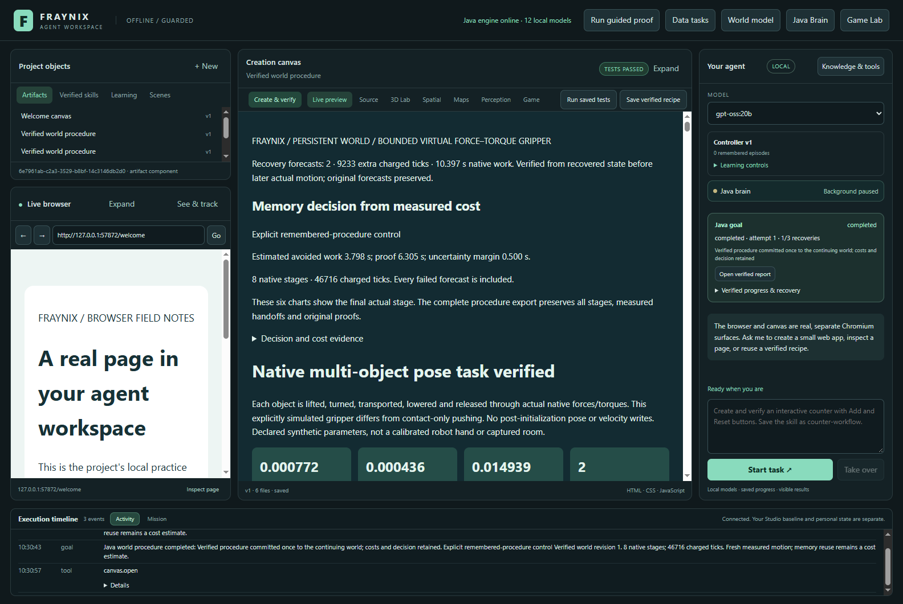
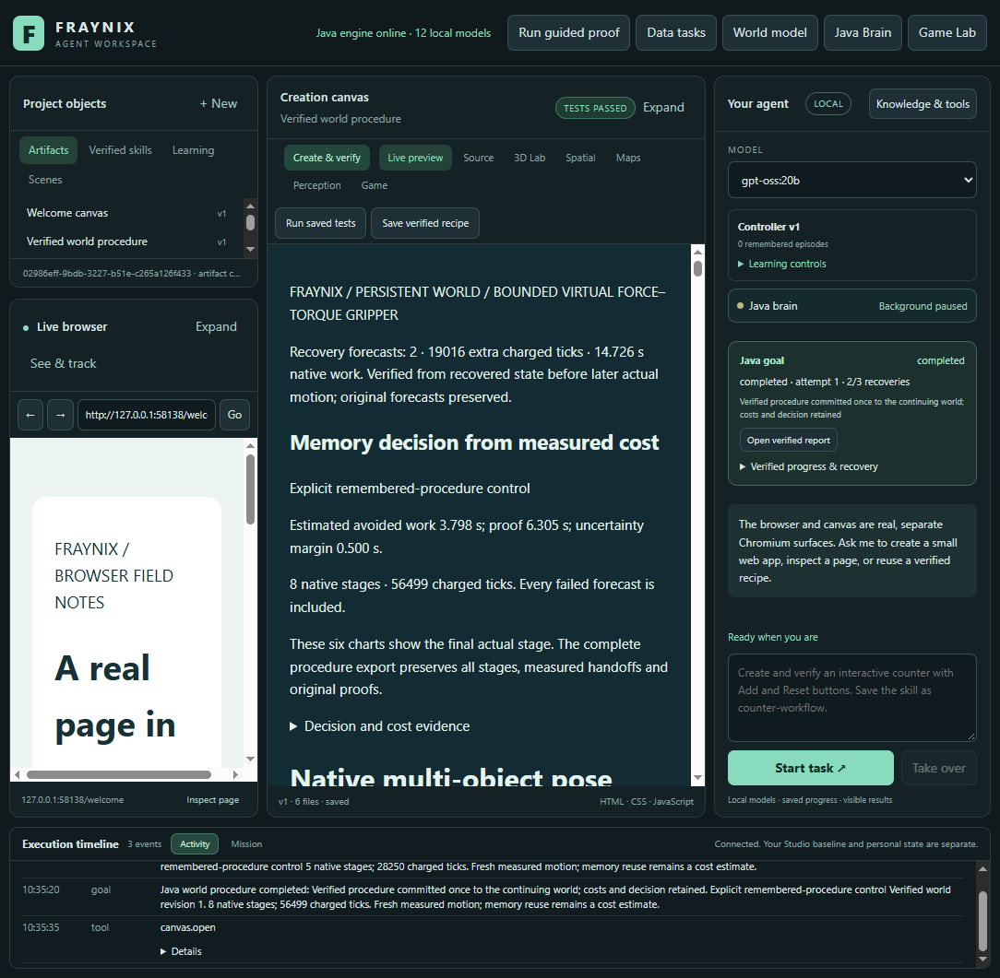

Keep the world.
Recover the task.
Original Java / native physics evidence from labelled synthetic scenes. Offline inspection; no new simulation or model inference.
Committed state, fresh forecasts, verified continuation
Finish the owned actual stage from its native checkpoint.
Derive the next frame from verified motion. Preserve the old forecast.
Reserve work and run a distinct forecast. Verify its exact source and outcome.
Run a separate actual stage. Compare, audit and commit once.
Two explicit resumes, 115,200 charged ticks, 20 minutes of active goal time and 90 seconds per attempt remain the limits. The native checkpoint now reuses the existing bounded atomic writer after a real Windows lock failure. A new prediction never substitutes for actual motion. The audit checks original hashes, provenance, state, action plan, protected bodies, chronology, native outcome and cost.
What was refused
Altered binding references, frame/plan hashes, chronology, budget charges, waypoint and outcome fields were rejected. Same-size native-file corruption was refused even with its timestamp preserved. Exact restoration restored verification. Corrupt checkpoints refuse motion. Restoring only checkpoint bytes retains quarantine; restoring the complete stopped backup permits explicit verified continuation.
Actual test outcomes
One fresh three-stage retained procedure, an uninterrupted baseline, a graceful interruption and four abrupt-interruption conditions including a double interruption and a changed condition. Two assigned logical processors and 512 MiB Java heap; no LLM calls.
| Case | Result | Caller time | Charged ticks | New forecast time |
|---|
Caller time includes controlled restart and evidence-reading overhead. Native forecasting time is recorded separately. Unknown interruption tails are conservatively charged the full attempt bound. Resumed totalMillis=0 means unavailable and excluded from calibration.
These are three-stage synthetic cases with exact-owned-PID Java termination and one graceful close. They do not establish power-loss durability or hardware accuracy. There is no claim of general intelligence or trained LLM weights.
This diagram replays recorded body centers with declared box outlines. Original records retain full rotation, velocity and contact evidence; this is not a new native rendering.
Inspect the original samples
X/Z projection of retained body positions. Original forecasts, recovered forecasts and actual runs have separate identities. No interpolation, regenerated path or full 3D rotation rendering.
The actual integrated application
Captured 2026-11-08 after fresh verified tasks. Existing chat, world controls and saved reports remain together. Requested window sizes 1600×1100 and 1100×1100; captured client areas 1584×1061 and 1084×1061.


Next evidence
Measure complete recovery costs on longer mixed tasks, retaining the new checkpoint locking regression. Keep uninterrupted and simple-control comparators, complete timing and original source/outcome gates.
Verification results · Original archive · Source inventory · Prospective contract